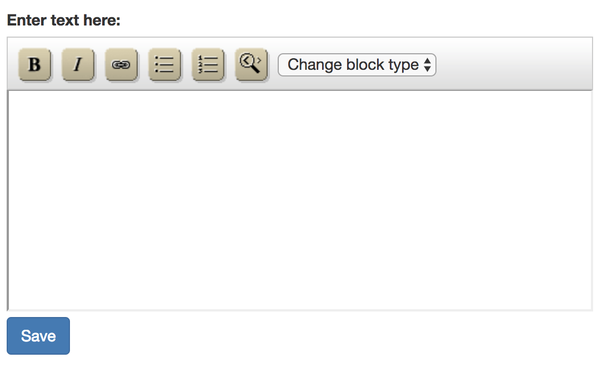
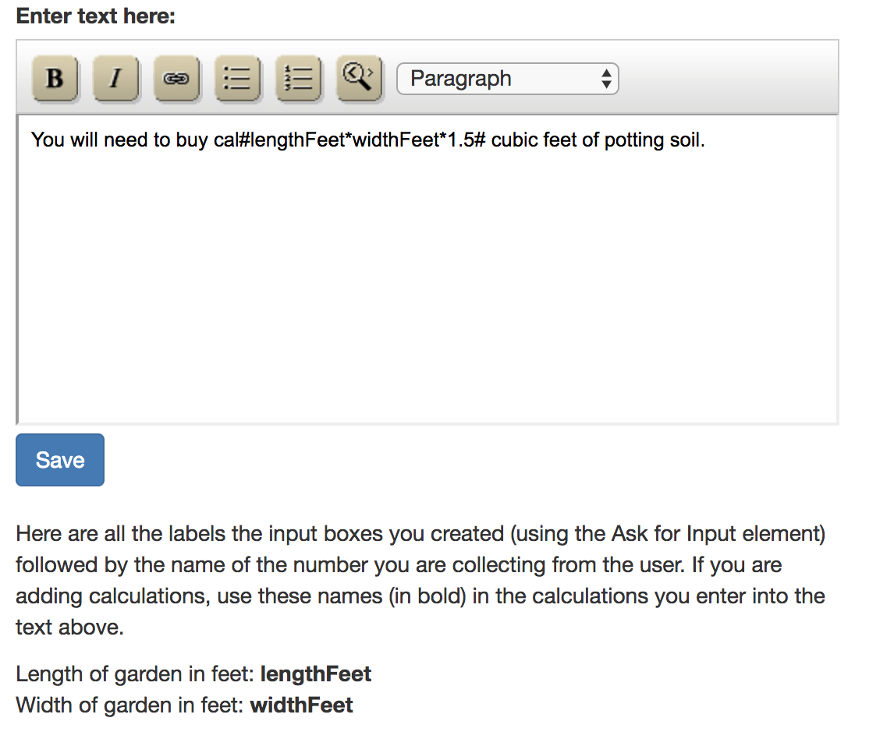
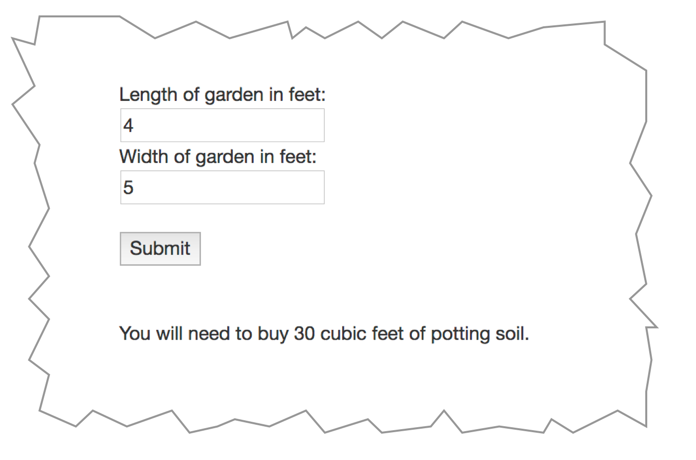

The purpose of this element is to add some instructions to your step. As you can see from the tool bar you can create bold or italic text, create bulleted or numbered lists or turn text into a hyperlink. You can also add levels of heading with the Change Block Type drop down control.
Lastly you can add calculations to your text by entering a math expression and entering “cal# befor it and “#” after it. Suppose your wizard tells users how to make a casserole but the user can decide how much to make. You might ask users, using Ask for Input for a number servings they want to cook. When you created that user input element you named the result “numServings” (see Ask for Input help). Maybe you need 1/2 cup of noodles per serving so when you list the ingredients you might add:.
Add cal#numServings * 0.5# cups of noodles
If the user wants 4 servings then this text will look like “Add 2 cups of noodles” when you look at the wizard in Preview.
You can use the following math symbols:
You can enter a positive or negative number and a fraction (2, -2, -2.5). You can also use parentheses to make more complex expressions. Using our input name above we might create:
cal#(numServings * 2) + 1#
This would multiply our input by 2 then add 1. But remember you have to ask for the input before using it or the text will not appear. When you create the text, the names of the inputs are listed below as shown in this example.
When you look at the Preview, this part of the step will look like this after you enter the numbers 4 and 5 and select Save
